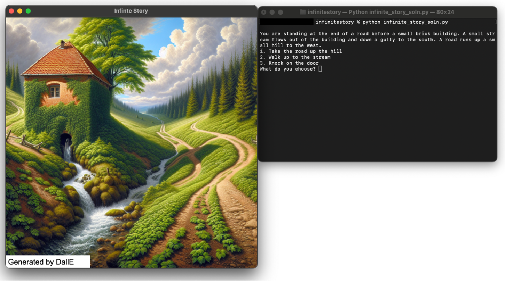

Assignment designed by Chris Piech. Handout written with Anjali Sreenivas, Yasmine Alonso, Katie Liu. Ethics by Javokhir Arifov and Dan Webber. Test scripts by Iddah Mlauzi and Tina Zheng. Advised by Mehran Sahami and Ngoc Nguyen, Juliette Woodrow and more!
In this assignment, students will build a choose-your-own adventure game that integrates generative AI to create a dynamic, interactive, “infinite story” experience for users. The experience is drive by nested dictionary (JSON) objects containing information for each pre-existing "scene" in the story. Each scene is also a nested dictionary containing choices a user could make for where to go next from this point in the story, a scene description, and more. In order to stitch together their infinite story creation, students are challenged to navigate and manipulate this deeply nested data dictionary, and along the way, they develop an appreciation for the utility and structure of dictionary objects. The core concept is that if a user ventures into a scene that hasn't been predefined, the program will request ChatGPT to generate the next scene, allowing the adventure to continue seamlessly.
The assignment is broken into milestones, beginning with loading the story data from a JSON file and identifying "dead ends" where scene references exist without corresponding definitions. Students will then create functions to print scenes and allow users to make choices that guide the narrative. As users explore, the game will transition from one scene to another until it encounters an undefined scene, at which point it calls ChatGPT to generate the next part of the story.
The last part of the assignment invites students to reflect on AI ethics and engage in a deeper analysis of the potential strengths, weaknesses, and appropriate applications of integrating Generative AI into their projects.
By completing this assignment, students will reinforce their understanding of dictionaries, nested data structures, and function decomposition. They will also gain practical experience working with APIs and consider the ethical implications of generative AI.
We believe the “Nifty” aspect of our assignment comes from a few places:
Students learn about and unleash the power of Generative AI to discover “infinity!” When their user reaches a scene that is not present in the story data dictionary, students get to make an API call to ChatGPT to obtain the missing data, and continue onwards. Our assignment is, to the best of our knowledge, one of the first to integrate the usage of LLMs and Generative AI in introductory CS education, opening up exciting possibilities for students.
We also think it is nifty to show students that Generative AI can be a tool to make their programs more wonderful, rather than just something that can write code.
As the user visits various scenes, students get to display DallE-generated visuals (provided to them) for the scene, leaving for a memorable experience.
Here is the assignment handout and associated starter code. We also have a folder in the directory named illustrator which is for creating images to go with the story and for reducing the size of the images. We also include the grading rubric used for reference.
| Summary | Students build a choose-your-own-adventure game. The game features a starting world, and when players explore beyond it, it uses ChatGPT to create new scenes, allowing the narrative to continue infinitely. |
| Topics | JSON, nested data structures, API requests, generative AI, displaying images, program decomposition, ethics |
| Audience | CS1 (capstone, end of term) |
| Difficulty | |
| Strengths | Students gain hands-on experience with an exciting and powerful tool. The assignment reinforces practical Python concepts like JSON and f-strings. It provides valuable practice with more complex, nested dictionaries. Instructions are well-structured, breaking down the task into clear steps that guide students through the data structure. |
| Weaknesses | The assignment introduces a lot of syntax that may be advanced for an introductory course. The nested data structures are also complex and were hard to understand at times for students. |
| Dependencies | Students should understand string formatting and data structures (specifically lists and dictionaries) and nested data structures. They should also be familiar with graphical programming, specifically Tkinter as the implementation is done in Python. |
| Variants | Students are encouraged to implement optional extensions. For example, they can create their own storyline by generating JSON files with new scenes, or they can track a "history" of scenes and choices to make the narrative more cohesive. The rest of the optional extensions can be found at the bottom of the assignment handout. |
In order to provide free access for students to the OpenAI API, we created a wrapper around the OpenAI API, which we call NotOpenAI. We also generated API keys for each student using a single shared account for the class. This allowed students to use the API without needing to create their own accounts or pay for access. The wrapper is available in the starter code for the assignment in the folder titled "notopenai". We then routed all requests through our wrapper function so that we could monitor usage and ensure that students were not abusing the API. This allowed us to provide students with a safe and free way to use the OpenAI API for their assignment. We also provided instructions for students to create their own OpenAI API key if they wanted to use the API outside of the assignment.
Students seemed to enjoy this assignment and found the assignment help their understanding of dictionaries:
“I thought it was fun. It was a good way to learn about AI and practice using dictionaries and I actually enjoyed the extensions.”
“I loved the assignment, it encapsulated the last unit of CS106A very well and was engaging.”
While the main goal was to give students a chance to further understand dictionaries and nested structures, they also seemed to appreciate the assignment’s use of ChatGPT, especially at a time where it is so relevant:
“I LOVED IT!!! It was an awesome way to become more familiar w/ LLM in coding, and it was super fun to mess around with and add to.”
“I thought it was really nice that the class decided to embrace ChatGPT and teach us how to use it. It was easier once I understood how to call it and retrieve answers. It wasn’t as difficult coding complexity wise but it was definitely fun to use and opened up the path for different things we could do on our own.”
“Incredibly cool assignment, very empowering to be able to do this kind of project in an introductory class.”
Course teaching assistants seemed to feel similarly; one mentioned that they felt as if “students generally liked it” and that it “made them feel they could build something actually useful in the real world.”
Students and course staff seemed to agree that some of the beginning parts (JSON parsing) of the assignment were daunting. It was common for students to feel intimidated and worried to start the assignment without any support because of how complex the nesting was. Perhaps in future offerings of the assignment, extra diagrams/a walkthrough tutorial video for getting started could be made available to students to help them feel less overwhelmed with the beginning stages of the process.
This assignment was inspired by Eric Roberts.